Casas Grandes
Cuna de la civilización Paquíme, arte en cerámica y tradición norteña.
Visitar" data-en="Places to Visit">Lugares que Visitar
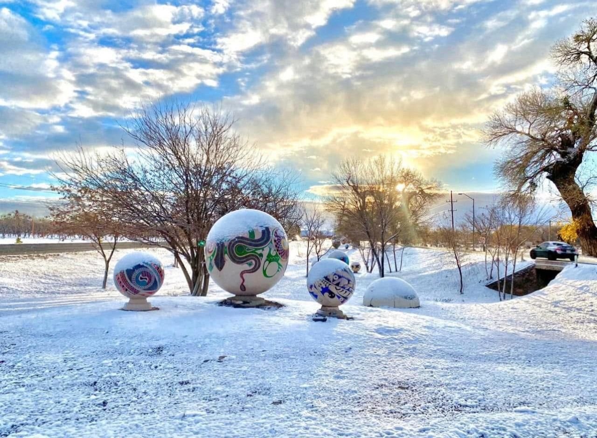
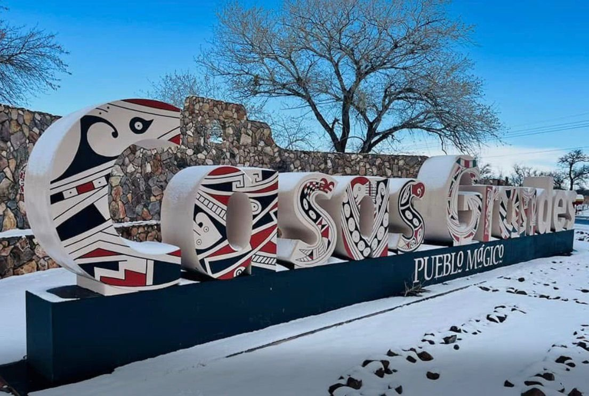
Las Esferas
Formaciones de piedra perfectamente redondas de origen misterioso. La primera parada obligada al llegar al municipio, impresionantes en verano y espectaculares bajo la nieve.
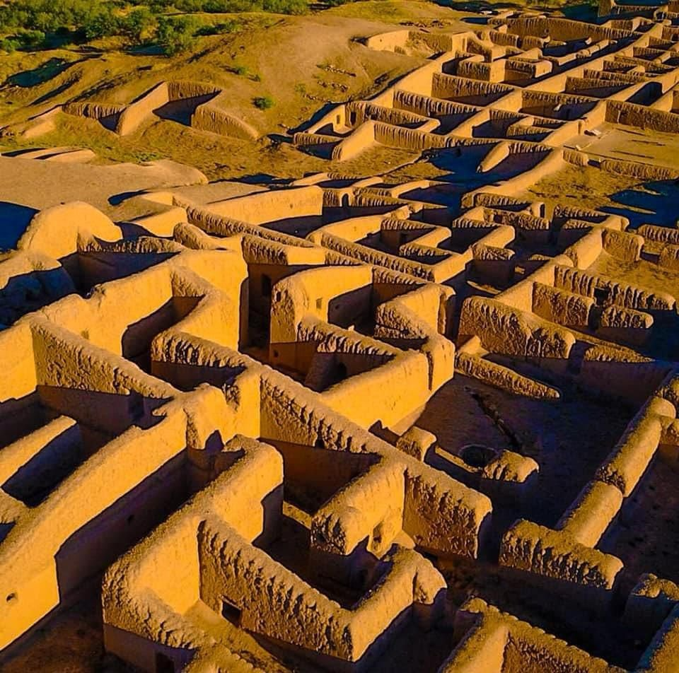
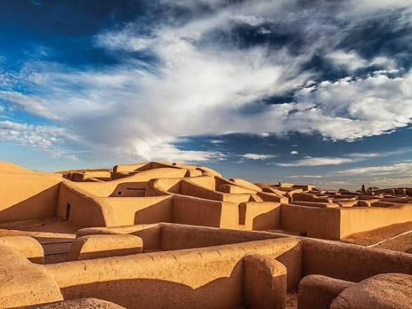
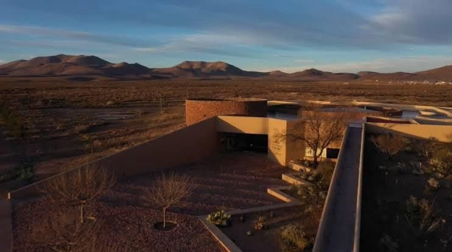
Zona Arqueológica de Paquíme
Patrimonio de la Humanidad UNESCO. La gran ciudad del norte con museo de clase mundial incluido.
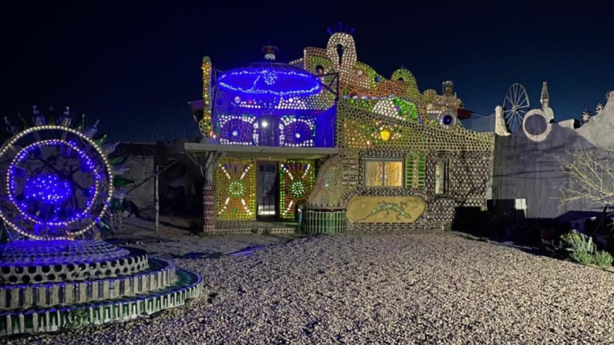
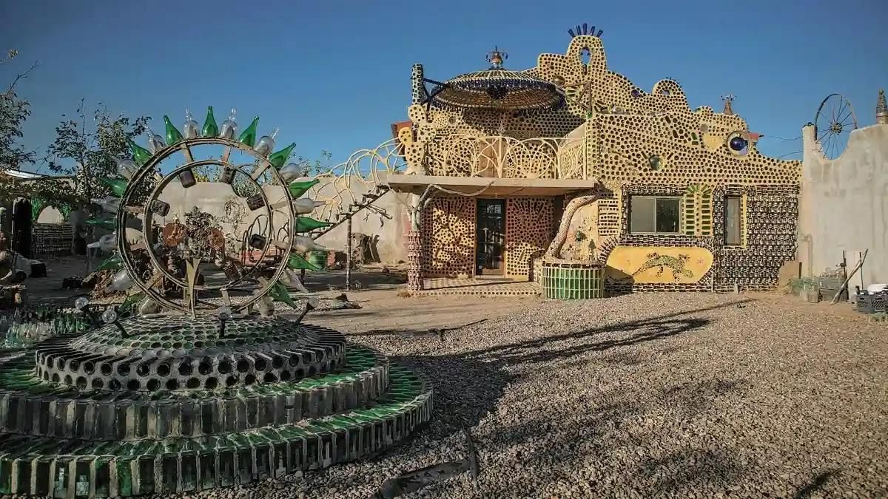
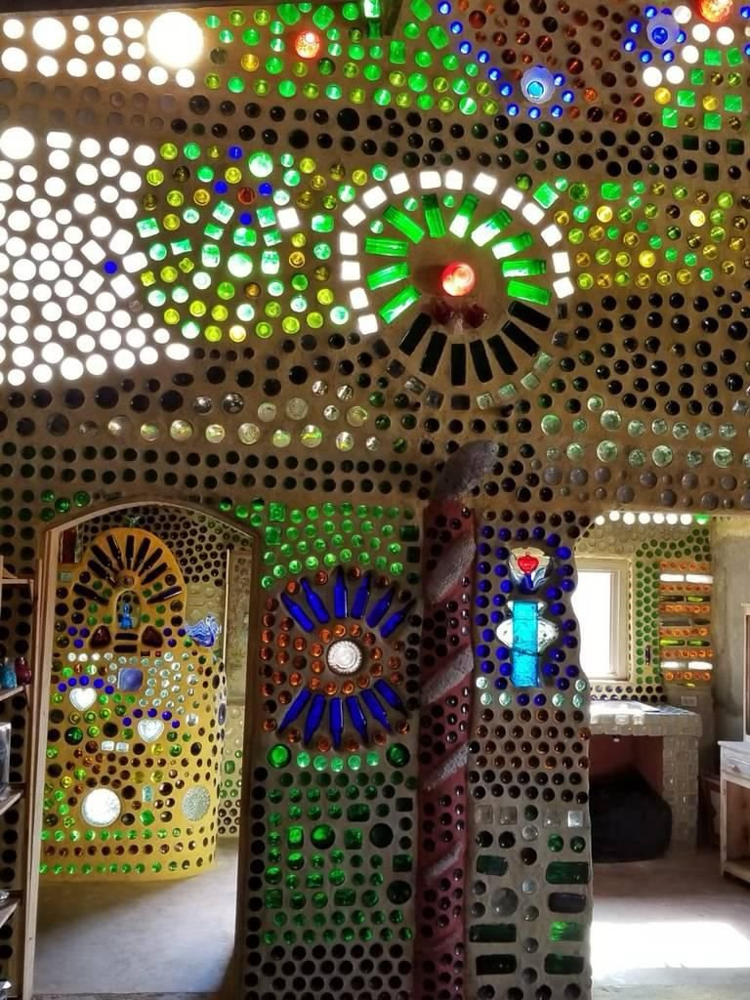
Casa de las Botellas
Miles de botellas de vidrio forman paredes y techo de esta obra única. De noche se ilumina con colores que cortan el aliento.
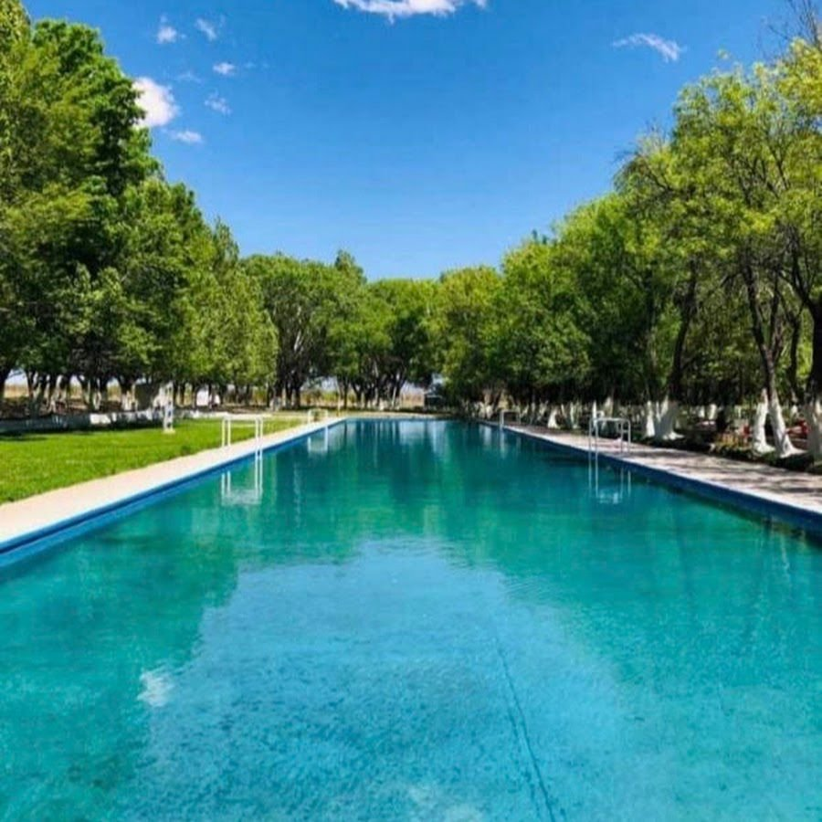
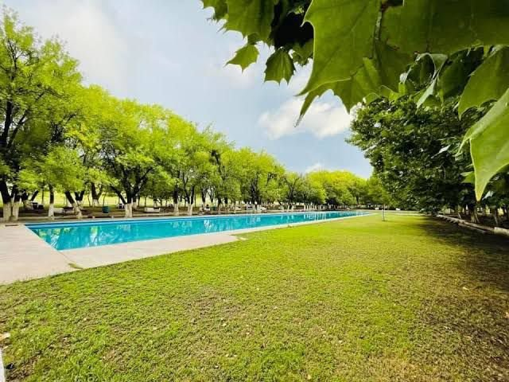
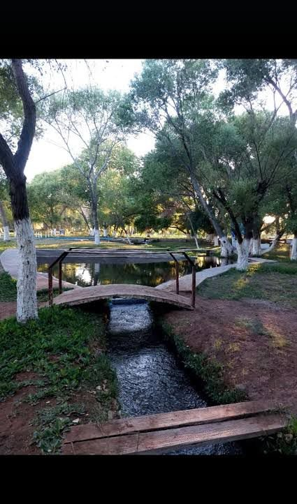
Ojo Vareño
Manantial natural perfecto para refrescarse. Albercas cristalinas rodeadas de álamos y jardín con riachuelo. El lugar favorito de las familias en verano.
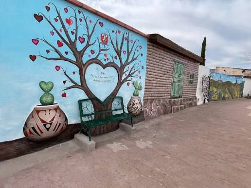
Callejón del Beso
Rincón pequeño y romántico en el corazón del pueblo. El lugar favorito para las fotos en pareja y una parada infaltable en el recorrido.